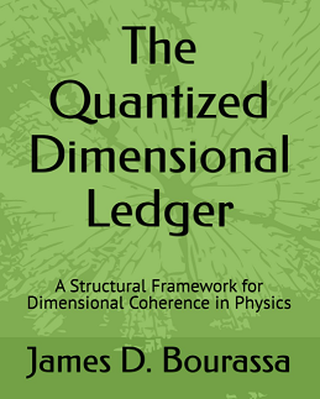

Scientific Publications · Open Research · October 30, 2026
QDL Publications & Open Research Record
A documented scholarly and computational record spanning
peer-reviewed metrology, dimensional-closure mathematics,
reproducible software and datasets, and exploratory
foundational physics.
The entries below are classified by
publication and evidence status.
A peer-reviewed journal article, a Zenodo monograph,
a computational dataset and an internal working manuscript
are not equivalent forms of scientific validation.
This page preserves historical work without treating
the QDC spacetime-substrate hypothesis as experimentally
established. The Research Program
governs the current physical interpretation of earlier records.
Publication Status and Evidence Classification
The primary source should always be read alongside
its date, declared assumptions and review status.
1. Peer-Reviewed Journal Publication
The principal externally published scholarly anchor
for the QDL program.
Peer-reviewed · Journal article · 2026
The Quantized Dimensional Ledger for Metrology:
Dimensional Closure, QMU Ledgers, and the
Ontology of Physical Constants
James D. Bourassa.
Journal of Theoretical and Applied Physics,
volume 20, issue 3, pp. 310–318 (2026).
Publisher's issue date: June 30, 2026.
Introduces QDL's 3L+2F dimensional framework,
QMU measurement ledgers and proposed structural
treatment of physical constants. The paper's
emphasis is conceptual and metrological rather
than a new dynamical field equation.
Publication of this paper does not constitute
independent experimental confirmation of a
physical QDC substrate. Technical clarification
of ledger interpretation and normalization is
tracked separately; no published correction is
asserted here.
Suggested citation:
Bourassa, J. D. (2026).
The Quantized Dimensional Ledger for Metrology:
Dimensional Closure, QMU Ledgers, and the
Ontology of Physical Constants.
Journal of Theoretical and Applied Physics,
20(3), 310–318.
https://doi.org/10.57647/jtap.2026.2004.05
2. Core Mathematical Publications
The most useful mathematical references for evaluating
QDL independently of its proposed spacetime ontology.
Open research monograph · v1.2.1
Primitive Closure and the Architecture of Physical Admissibility
Comprehensive research synthesis connecting
declared dimensional closure, structural
admissibility, conditional QDC models and
explicit open physical questions.
Zenodo DOI: 10.5281/zenodo.21813133
Mathematical research record
Integer Lattice Structure of Dimensional Quantities
Foundational algebraic analysis of QDL's
integer-vector representation of dimensional quantities.
Zenodo DOI: 10.5281/zenodo.18970320
Mathematical research record
The Quantized Dimensional Ledger:
A Lattice Structure for Dimensional Closure
in Physical Theories
An early account of the lattice perspective
and declared closure constraints.
Zenodo DOI: 10.5281/zenodo.18981850
Operator classification · Preprint
Ledger-Closure Constraints on the SMEFT
Applies a lattice-theoretic framework to
proposed operator exclusions and Wilson-coefficient
relations under declared assumptions.
Zenodo DOI: 10.5281/zenodo.17780443
Mathematical reading note:
Exact identities such as the rank-four closure
parametrization and CONTACT-37 involution follow
from specified definitions. Their correctness does
not by itself establish novel physics or scientific
priority over related existing mathematics.
3. Computational Companions and Reproducibility
Executable and machine-readable work suitable for
targeted independent mathematical or software review.
Computational companion
QDL/QDC Computational Companion I
Finite closure-ledger examples, recurrence
structures and related reproducibility controls.
Zenodo: 20777498
Source-anchored dataset
QDL SMEFT Γ(O) Audit Companion v1.0
A representative subset for closure-vector
classification of Warsaw-basis operator mixing
and audit categories.
Zenodo: 20357001
Completion and verification archive
QDL Structural-to-Dynamical Completion Program
Theorem, audit, reproducibility and falsification
records documenting declared finite-model tests.
Zenodo: 21753200
Public Calculator and Measurement Integrity Development
The QDL Admissibility Calculator
is an interactive demonstration. Later Measurement
Integrity Engine prototypes include internally tested
structural rules, calibration workflows and audit traces.
These prototypes are research software; independent
comparative performance against strong conventional
validators has not been established.
The U.S. provisional patent filing of May 3, 2026,
with computer-program appendix, is a documented
intellectual-property filing, not a peer-reviewed
publication or issued patent.
4. Unified-Field Syntheses and Historical Research Records
Important program history, organized by publication
status rather than implied physical completion.
Open historical research · August 2026
Toward a QDL Unified Field Theory
Consolidated Theorems, Computational Gates,
Reproducibility Records, and Open Physical-Closure
Problems, version V1.0. A frozen historical snapshot,
not the current October scientific conclusion.
Zenodo DOI: 10.5281/zenodo.21894736
Earlier open monograph
Physical Law as the Minimal Architecture of Persistence Under Closure
Historical theoretical synthesis on predictive
compression, persistence under closure,
ontology and vacuum energy.
Zenodo DOI: 10.5281/zenodo.20940986
Historical conditional model
The QDC Completion Theorem
Earlier synthesis of matter-basis minimality,
family automorphisms, charged-lepton closure
and gravitational recurrence. The title describes
its original model scope, not a completed UFT theorem.
Zenodo DOI: 10.5281/zenodo.20692677
Internal working reference · October 27, 2026
Quantized Dimensional Ledger Unified Field Theory — Version 2.1
Complete Mathematical and Physical-Status Synthesis.
Integrates CONTACT-37, Phase IV Emergent Universality,
finite spectra, particle and gravity models, and reasons
physical QDC identification remains open.
A complete internal manuscript exists. This page
does not describe it as peer-reviewed or provide
an unverified public DOI. Qualified evaluators
may request the current reference from the author.
October synthesis note:
The historical program also records a V1.6 synthesis
and later V1.7/V2.0 working editions.
Public-deposit metadata for the reported V1.6 DOI
was not independently verified in this page update;
rather than give an uncertain public link, the
Institute's author can provide the provenance record
on request.
5. Selected Technical Bibliography
The following original DOI links from the earlier
Publications page are retained. They document
research development under each work's original
assumptions. Expansion of an entry does not
imply peer review or external physical validation.
Dimensional closure, numerical ledgers,
operators and research methods
From Closure Admissibility to Physical Selection:
A Roadmap for the Quantized Dimensional Ledger Program
Research roadmap ·
10.5281/zenodo.20461142
The Quantized Dimensional Ledger as a Structural
and Numerical Closure Program for Fundamental Physics
Review and roadmap ·
10.5281/zenodo.20076081
QDL Numerical Ledger Companion: Reference Ledger,
Closure Targets, and Executable Checks
Numerical companion ·
10.5281/zenodo.20086069
Lessons from the QDL Closure Sequence:
Strong Claims, Open Residuals, and Falsification Tests
Historical methodological synthesis ·
10.5281/zenodo.20098982
The Neutral Matching Unit in QDL Closure Grammar
Selected binary–ternary sector and Z6 grading study ·
10.5281/zenodo.20098523
Quantized Dimensional Closure:
Compton Realization and Operator Sector Selection
Dimensional and conditional operator analysis ·
10.5281/zenodo.20100436
Particle representations, spectra and electroweak
or flavor studies
QDL Spectrum Selection as a Conditional Standard Model Theorem
Gauge seeds, hypercharge and one-generation matter ·
10.5281/zenodo.20086341
QDL Flavor Closure as a Conditional Rank Theorem
Three generations, Yukawa depth and mixing ·
10.5281/zenodo.20090053
QDL Charged-Lepton Mass Spectrum:
A Synthesis of Derived Structure and
Phenomenological Radial Closure
Phenomenological reconstruction,
not a confirmed blind prediction ·
10.5281/zenodo.20328260
QDC geometry, gravitational and cosmological models
Planck-Scale Fluctuation Closure as the
Substrate Interpretation of the Quantized Dimensional Ledger
Earlier conditional substrate capstone ·
10.5281/zenodo.20346814
The Quantized Dimensional Cell in Gravitational Dynamics:
GM, Keplerian Closure, and Dimensional Admissibility
Dimensional interpretation,
not a new gravity measurement ·
10.5281/zenodo.20026718
QDL Closure of Classical Gravity
Conditional Einstein–Hilbert, Bianchi
and geodesic model studies ·
10.5281/zenodo.20088462
QDL Cosmological Closure as a Horizon-Screened Curvature Ansatz
Conditional vacuum-energy and dark-sector model ·
10.5281/zenodo.20090219
6. Benchmarks and Null Tests
Public-data and methodology studies, separate
from claims of novel physical effects.
Benchmark archive
Benchmarks & Null Tests
Preserved model-evaluation and falsification materials.
Zenodo: 18057668
Public-data benchmark
NV ODMR Benchmark
A reusable optical-detection magnetic-resonance
analysis example.
Zenodo: 18069870
Residual-first benchmark
Optical Cavity Resonance Traces
Public-data example emphasizing residual
comparisons and model adequacy.
Zenodo: 18076864
The September Historical Predictions Ledger and
HP-01 prospective test are maintained as scientific
prediction-governance work; they are not counted here
as peer-reviewed experimental confirmations.
Refer to
Current Research: Predictions
.
7. Books and Accessible Introductions

Recommended Reading Path for Independent Review
Research Access and Independent Evaluation
The Institute welcomes independent written assessment
of exact mathematical results, source code, datasets,
structural-admissibility methods and carefully delimited
physical hypotheses. A useful first assessment would
distinguish mathematical correctness, software
reproducibility, novelty over prior art and demonstrated
value relative to conventional methods.
Current physical-status boundary:
no independently identified physical QDC carrier,
uniquely selected physical parent law or independently
confirmed QDL-specific no-fit experimental prediction.